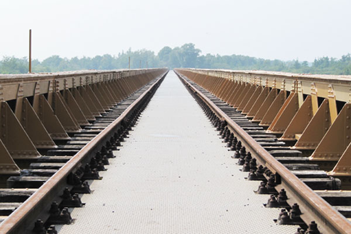

Wandelroute natuur
Maak een mooi wandeling vanuit het centrum van Den Bosch naar de Moerputten over een oude spoorbrug uit 1887. Deze brug is sinds 1995 een rijksmonument. Geniet van de prachtige stad en de omliggende natuur!

Maak een mooi wandeling vanuit het centrum van Den Bosch naar de Moerputten over een oude spoorbrug uit 1887. Deze brug is sinds 1995 een rijksmonument. Geniet van de prachtige stad en de omliggende natuur!